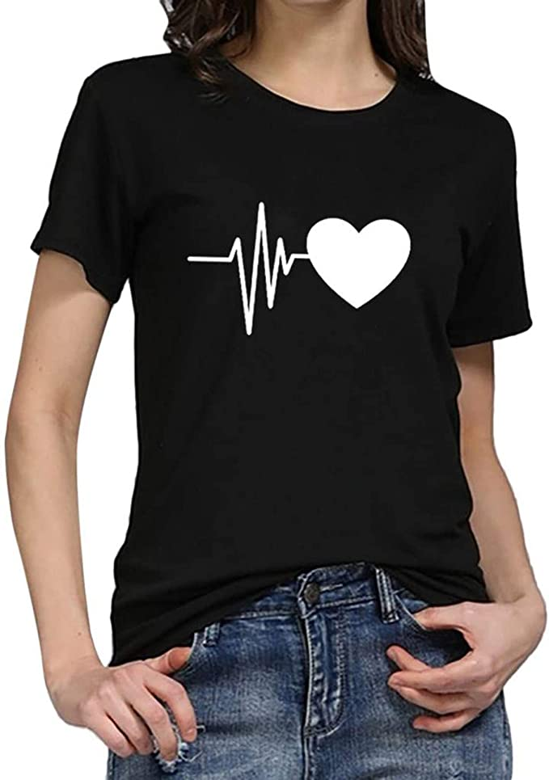
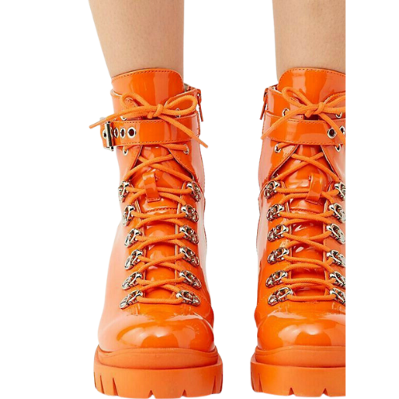
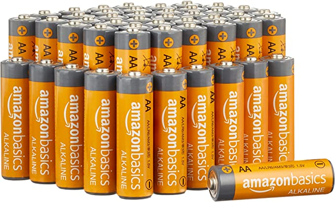
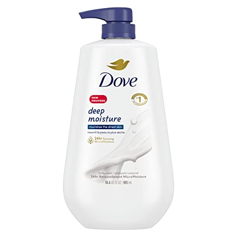

FASHIONStatement Essential$89 Melbourne · AI & software engineering
I build systems
people can actually use.
Tuong Hao Truong — Master of Artificial Intelligence at RMIT University. I turn technical problems into polished, user-facing products across healthcare AI, commerce and hospitality.
TH
build / ship / learn
A portfolio should not be a folder of screenshots.
It should feel like the products themselves.
Selected systems / 01—03
Three projects.
Three different kinds of engineering.
Each case study below contains an interactive, portfolio-safe product simulation. It mirrors the original product language without exposing credentials, production data or backend services.
01
Healthcare AI · Capstone team product
AI Milly
A medically attuned, real-time interpreter designed around emergency-department communication.
AI / 2026
Problem
When a clinician and patient do not share a language, every extra interaction costs time and can reduce understanding. Milly turns a two-way conversation into a live bilingual exchange.
Engineering
The original app captures 16 kHz mono PCM audio in the browser, streams it over Socket.IO, runs a Gemini live speech pipeline, returns translated text and queues text-to-speech output.
ReactIonicTypeScriptExpressSocket.IOGeminiGoogle Cloud
01Browser audioPCM · 16 kHz
→
02Realtime socketstreaming session
→
03AI pipelineSTT · translate
→
04Voice returnTTS playback
INTERACTIVE PRODUCT SIMULATION No microphone data is sent
AI MILLY / ED INTERPRETER
Say hello to
AI Milly.
Bridge language gaps with real-time, medically attuned translation.
SESSION SETUP
Select patient language
Clinician side remains English (AU).
LIVE SESSIONSpanish
PATIENT · TRANSCRIPT
Me duele mucho el pecho y me cuesta respirar.
I have severe chest pain and I am having difficulty breathing.
CLINICIAN · ENGLISH (AU)
When did the pain start?
¿Cuándo comenzó el dolor?
Try it: Start → choose a language → tap the mic.
02
Full-stack commerce · Academic team product
Aladin
A multi-role e-commerce system connecting customers, vendors and shippers across the same order lifecycle.
WEB / FULL STACK
ROLE-SWITCHING COMMERCE DEMO Local simulation only
aladin / commerce-system
CART 0
FEATURED DROP / 02
Neon Orange
Neon Orange
Clear Strap Boots

VENDOR CONSOLE
Inventory & orders
ACTIVE PRODUCTS42+6 this month
OPEN ORDERS185 need action
FULFILMENT94%on-time
PRODUCTSTOCKPRICESTATUS
Core Collection18$72 Live

Home Edition05$110 Low
Studio Series31$49 LiveSHIPPER HUB
CAT LAI TERMINALDistribution queue
Hub08:30
District 109:12
District 510:05
Complete12:40 ETA
#ALD-2048Nguyen Van ACash on Delivery
#ALD-2051Tran Minh KInternet Banking
#ALD-2057Le Thanh PCash on Delivery
Try it: switch Customer / Vendor / Shipper. In Customer view, add products to the cart.
System design
Aladin models three user types on top of a shared commerce domain: customer browsing and cart flows, vendor inventory management, and shipper fulfilment by distribution hub.
Backend
Node.js + Express serves EJS views and MongoDB-backed models for users, products and orders. Password handling uses bcrypt, while search is supported through a MongoDB text index.
Node.jsExpressEJSMongoDBMongooseBootstrapbcrypt
Shared commerce domainCustomer purchases become vendor orders and shipper fulfilment tasks, keeping three role-specific interfaces connected to the same underlying product and order models.
03
Hospitality platform · Customer + operations
Hoa Viên Phương Nam
A restaurant platform that joins a premium customer experience with reservations, events, inventory, media and admin operations.
REACT / PRODUCT
Product scope
The codebase spans public menu discovery, multi-step table reservation, event / wedding booking, a media forum, user accounts and an admin control surface.
Operations
Admin workflows cover menu items, set menus, reservations, events, inventory, categories, promotional media and restaurant settings — with role-aware navigation and animated transitions.
ReactViteTailwindFramer MotionRadix UIRecharts
MenuReservationsEvent bookingInventoryCategoriesMediaSettingsAdmin stats
RESTAURANT OPERATIONS DEMO Simulated booking flow
HV
HOA VIÊN PHƯƠNG NAMẨm thực Châu Đốc
RESERVATION FLOW
Đặt Bàn
Trải nghiệm quy trình đặt bàn nhiều bước, mô phỏng trực tiếp từ sản phẩm.
1234
STEP 01Chọn không gianChọn khu vực phù hợp với buổi gặp của bạn.
STEP 02Thời gian & số kháchChọn lịch và quy mô bàn trong vài thao tác.
SỐ KHÁCHQuy mô bàn
4
STEP 03Cá nhân hoá trải nghiệmThêm dịp đặc biệt và yêu cầu để đội ngũ chuẩn bị trước.
STEP 04 · REVIEW
✓
Sẵn sàng xác nhận.
Một summary rõ ràng trước khi gửi yêu cầu đặt bàn.
KHÔNG GIANBàn thường
THỜI GIANTối nay · 19:30
SỐ KHÁCH4 khách
DỊPBữa tối gia đình
YOUR SELECTIONBàn thường · Tối nay · 19:30 · 4 khách
 Signature
SignatureMÓN CHÍNH · CÁCá lóc nướng trui
Cá nướng thơm, rau sống và nước chấm kiểu miền Tây.
245.000đ For sharing
For sharingLẨULẩu mắm Phương Nam
Rau, nấm và nguyên liệu tươi cho trải nghiệm dùng chung.
520.000đ Crispy
CrispyKHAI VỊChả giò hải sản
Giòn nhẹ, nhân đậm vị và nước chấm chua ngọt.
135.000đ Steamed
SteamedDIMSUMHá cảo tôm
Vỏ mỏng, nhân tôm mọng và rau xanh thanh vị.
118.000đ Popular
PopularMÓN CHÍNH · CƠMCơm chiên hải sản
Cơm rang hạt rời, rau củ và topping hải sản.
185.000đ Chef pick
Chef pickMÓN CHÍNH · HẢI SẢNHải sản sốt chua ngọt
Lớp vỏ giòn, sốt cân bằng vị ngọt, chua và thơm.
295.000đADMIN CONTROL
ADMINQuản lý nhà hàng
RESERVATIONS24today
MENU ITEMS86active
LOW STOCK07needs review
EVENTS05upcoming
Inventory healthLive operational surface
Try it: complete the 4-step Booking flow, filter the photo-rich Menu, or switch into Admin.
About / approach
I care about the layer where engineering meets experience.
My strongest work sits between backend logic, AI capability and the UI a real person touches. I enjoy taking a technically complicated system and making the interaction feel simple, deliberate and trustworthy.
Build the system
Understand data, APIs, state and failure modes — not only screens.
Design the interaction
Make complexity legible through hierarchy, motion and feedback.
Ship responsibly
Keep credentials, private data and production dependencies out of public demos.
Next / conversation
Looking for someone who can move from AI pipeline to product UI?
I’m building toward AI / software engineering roles where product thinking matters as much as implementation.